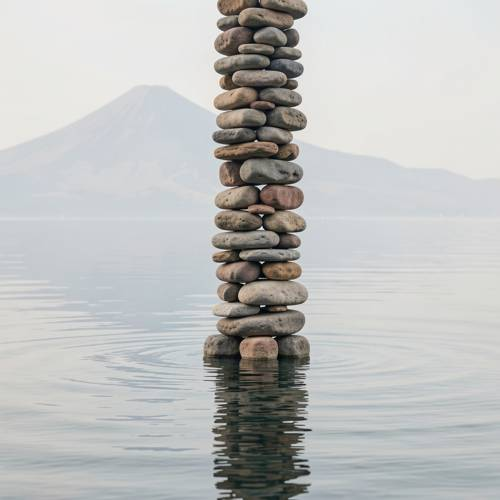
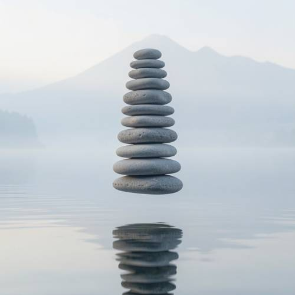
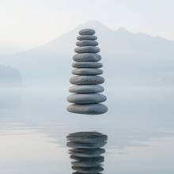

Entity Layout — A tower of smooth cobblestones suspended above the calm water, and bey
A tower of smooth cobblestones suspended above the calm water, and beyond is a vague mountain, the entire scene assumes a Zen feel.

Direct — one call, no iteration

Continuum — Kimi K3 + FLUX.2-klein-9B
Judge — Direct
FAILEntity Layout - Three-Dimensional Space — In the image, a tower of stacked, smooth cobblestones is positioned in the center. The base of this tower is situated within a body of calm water, with the lowest stones partially submerged and creating ripples. In the background, beyond the water and the tower, a large, vague mountain is visible through a hazy atmosphere. The prompt requires the tower to be 'suspended above the calm water', but the image depicts the tower resting in the water, which contradicts this specific spatial arrangement.
Judge — Continuum
PASSEntity Layout - Three-Dimensional Space — In the image, a tower of smooth cobblestones is centrally located in the foreground. This tower is positioned directly above a body of calm water, appearing to be suspended in the air. In the background, beyond the water and the tower, a mountain's silhouette is visible through a thick layer of fog, making it appear vague and distant. This arrangement places the tower in front of the water, with the mountain in the far background.
What the agent did
Thinking
The user wants a Zen scene: tower of smooth cobblestones (stacked stones/cairn) suspended above calm water, vague mountain in background. Generate with flux2-klein, no seed. Let me write a visual prompt.
Step 1 — `generate_image`
{
"model": "flux2-klein",
"prompt": "A tall balanced tower of smooth rounded grey cobblestones stacked one upon another, hovering suspended in midair above a perfectly calm mirror-like water surface, soft reflections below. In the far background, a vague hazy mountain silhouette dissolves into pale mist. Zen minimalist atmosphere, muted cool tones of grey, pale blue and soft white, gentle diffused morning light, serene and meditative, lots of negative space, fine art photography style."
}
Result img_0

Thinking
This is very good: tower of smooth cobblestones suspended above calm water (bottom stone hovers above the surface, reflection below), vague misty mountain behind, Zen muted palette. All elements present. Mark best and stop.
Step 2 — `mark_best`
{
"image": "img_0",
"reason": "All requested elements present: stacked cobblestone tower suspended above calm reflective water, vague misty mountain beyond, muted Zen atmosphere with generous negative space. Composition and tone match the prompt."
}
Thinking
Done. Good enough is a stop condition.
Model
The first generation captured everything the prompt asked for: - **Suspended stone tower** — a balanced stack of smooth, rounded grey cobblestones hovering just above the water, with a soft reflection rippling beneath it - **Calm water** — mirror-like surface with only the faintest ripples - **Vague mountain** — a hazy peak dissolving into pale mist in the distance - **Zen feel** — muted greys and pale blues, diffused light, and lots of quiet negative space I've marked this as the final image. If you'd like a variation — warmer light, a taller stack, or a closer crop — just say the word.